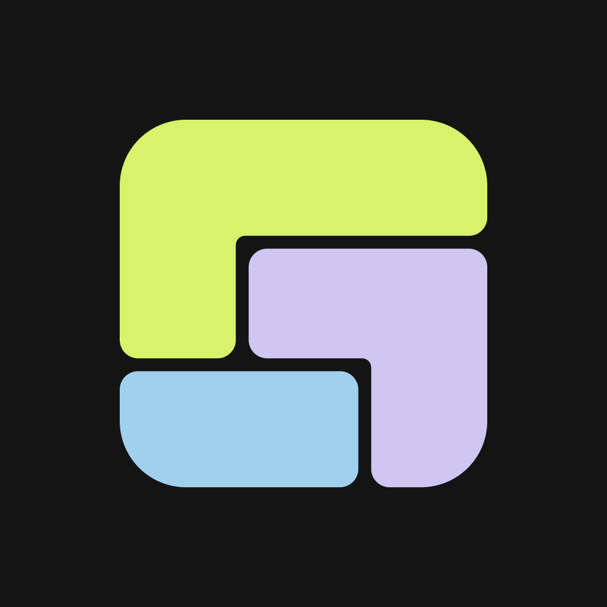

Son güncelleme: 29 Ekim 2026
Bu politika, VECTORİAL TEKNOLOJİ LİMİTED ŞİRKETİ (bundan sonra “biz”) tarafından geliştirilen yekpara mobil uygulamasının kişisel verileri nasıl işlediğini açıklar. Veri sorumlusu VECTORİAL TEKNOLOJİ LİMİTED ŞİRKETİ'dir.
İletişim: info@vectorialtech.com · vectorialtech.com
yekpara, sahip olduğun altın, gümüş ve dövizin güncel Türk Lirası değerini tek ekranda gösterir. Kaç gram altının ya da kaç doların olduğunu sen girersin; uygulama güncel fiyatla çarpıp toplamı hesaplar.
Banka hesabına bağlanmaz. Hiçbir bankayla bağlantı kurmaz, ekstre okumaz, kart bilgisi istemez. Girdiğin veri senin elle yazdığın veridir.
Konum, rehber, fotoğraflar, reklam kimliği, cihaz tanımlayıcıları, banka/kart bilgileri, kimlik numarası. Uygulamada reklam ağı, analitik veya izleme aracı yok; davranışını ölçmüyoruz.
| Amaç | İşlenen veri | Hukuki sebep (KVKK m.5 / GDPR m.6) |
|---|---|---|
| Hesabını oluşturmak ve girişini sağlamak | e-posta, parola özeti | Sözleşmenin ifası |
| Portföyünü saklamak ve değerini hesaplamak | portföy verisi | Sözleşmenin ifası |
| Güvenlik, kötüye kullanımı önleme | oturum ve zaman damgaları | Meşru menfaat |
Verilerini pazarlama için kullanmıyoruz, satmıyoruz ve üçüncü taraflara reklam amacıyla aktarmıyoruz.
Supabase — veritabanı ve kimlik doğrulama altyapısı. Verilerin burada, bizim adımıza (veri işleyen sıfatıyla) saklanır. Sunucular yurt dışında bulunabilir; bu durumda veriler yurt dışına aktarılmış olur.
Fiyat kaynakları — CoinGecko (değerli maden fiyatının türetildiği kaynak) ve T.C. Merkez Bankası (döviz kuru).
ÖNEMLİ: Fiyat sorgusunu senin cihazın değil,
bizim sunucumuz yapar ve bu sorguda yalnızca
varlık sembolü (örneğin XAU,
USD) gider. Kimliğin, e-postan ve kaç gram altının olduğu
bu kaynaklara hiçbir zaman gönderilmez. Fiyatlar bütün
kullanıcılar için ortak olarak önbelleğe alınır.
Gösterilen fiyatlar gecikmelidir ve ekran her zaman fiyatın ne kadar önce güncellendiğini yazar. Gram altın ve gümüş fiyatı, ons fiyatından hesaplanan türetilmiş bir değerdir; kuyumcu fiyatı değildir. Döviz kuru TCMB’nin resmî günlük kurudur.
yekpara yatırım tavsiyesi vermez, alım-satım aracılığı yapmaz ve finansal kuruluş değildir.
Verilerin, sen silene kadar saklanır.
Ayarlar → Hesabı sil. Onay verdiğinde hesabın ve ona bağlı tüm portföy verisi kalıcı olarak silinir. Bu işlem geri alınamaz.
Uygulamaya erişimin yoksa, hesabının silinmesini info@vectorialtech.com adresine yazarak talep edebilirsin. Talebi, hesabın e-posta adresinden gönderdiğinde kimlik doğrulaması için ek bilgi istemiyoruz. Silme işlemi en geç 30 gün içinde tamamlanır ve sana bildirilir.
Silinen veriler: hesabın, portföy kayıtların ve sahibi olduğun hesap grupları. Yedeklerdeki kopyalar yedek döngüsü içinde (en fazla 30 gün) kendiliğinden düşer.
Veriler aktarım sırasında şifrelenir (HTTPS). Veritabanında satır düzeyi güvenlik uygulanır: her kullanıcı yalnızca kendi kayıtlarına erişebilir, bu kısıt veritabanının kendisinde tanımlıdır.
KVKK m.11 ve GDPR kapsamında; verilerinin işlenip işlenmediğini öğrenme, bunlara erişme, düzeltilmesini veya silinmesini isteme, işlemeye itiraz etme ve veri taşınabilirliği haklarına sahipsin. Başvurularını yukarıdaki e-posta adresine iletebilirsin; en geç 30 gün içinde yanıtlanır.
yekpara 13 yaşın altındaki çocuklara yönelik değildir ve bilerek onlardan veri toplamaz.
Bu politika değişirse bu sayfadaki “Son güncelleme” tarihi güncellenir. Önemli değişikliklerde uygulama içinde bilgilendirme yapılır.